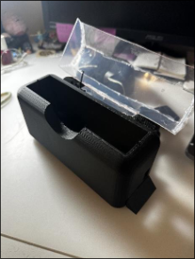
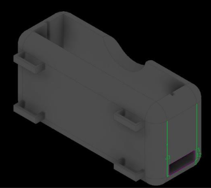

This project required us to create a design, any design, that, in some way, would help our client--an individual with spinal bifida. Me and my group decided to create a system that could both store the client's phone and charge it as the same time. This item would hang on the side of the wheelchair's arm. The most important objectives are as follows:
As the final result of this project, we managed to create a system that managed to attatch to the side of the client's wheelchair and charge their phone by using a wireless charging power bank:
My role in this project was to be a manager. I oversaw and facilitated meetings and discussions both within my group and between my group and the TAs. In doing so, the final result was an item that all members of the group were satisfied with. Moreover, I created valuable prototypes, features from which were adopted into the final design. Here is a picture of the Inventor model we created:
In retrospect, our design had some major flaws. Most notably, the lid which was floppy and loose. Adding a lid to the design was a last minute move that we deemed necessary out of consideration for the electronic components that may not be water proof. Other similar problems arose within our design, and all of these problems could have been qwelled had we created prototypes earlier on. Had we started testing earlier, we would have noticed these problems much earlier, and as a result, would have created and tested more solutions as well. This is the main takeaway from this project: Create tons of prototypes.
Though this project consisted of 3D printing, CAD, and more hands on development, the most important skill I learned would be from my position as manager. That is to say, I learned a lot about facilitating and managing our meetings through this project. I think that though I made some mistakes as manager, at least some of those mistakes, from my experience through this projects, have been eliminated.